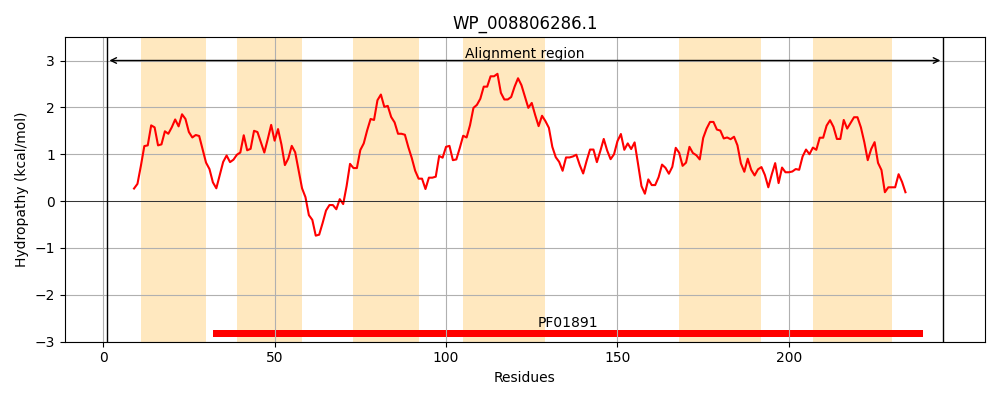
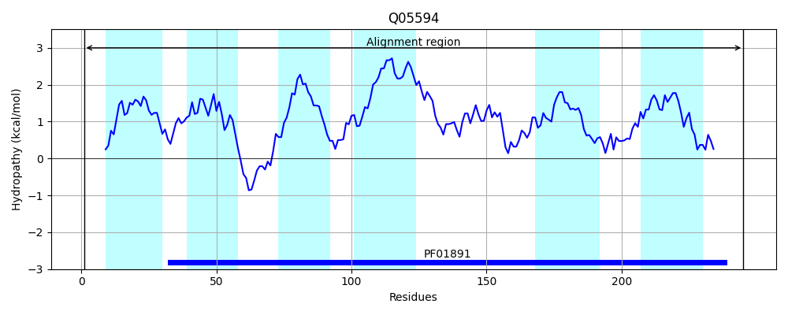
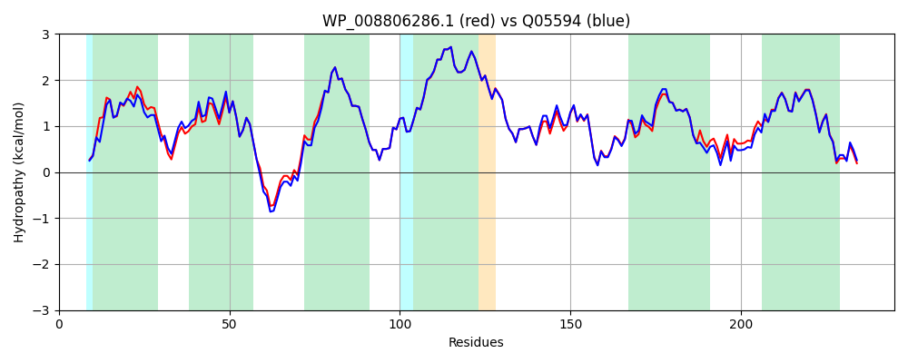

Hit Accession: Q05594
Hit TCID: 3.A.1.23.6
Hit Description: gnl|BL_ORD_ID|12209 gnl|TC-DB|Q05594|3.A.1.23.6 Protein cbiM - Salmonella typhimurium.
Mach Len: 245
e:0.000000
Query TMS Count : 6
Hit TMS Count: 6
TMS-Overlap Score: 6.450000
Predicted Substrates:CHEBI:23337;cobalt(2+)
BLAST Alignment:
Score: 1121 , Bit scores: 436 bits, E-value: 1.7e-157, Alignment length: 245, Percentage identity: 86
Query: 1 MNQVKSLKQLSYGGLAAAVLLIIVPQEAFAMHIMEGFLPPMWALAWWLLFLPCLWYGLVRLRRIVQEESNQKVLLALCGAFIFVLSALKIPSVTGSCSHPTGVGLAVILFGPGVVAVLGAIVLLFQALLLAHGGLTTLGANGMSMAVIGPMVGYLVWKLACRAGIRRDVGVFLCAMLADLMTYFVTSVQLGVAFPDPATGAGGSILKFMGIFCLTQIPIAIAEGLLTVMIYDQLTKRRLIAAEGH 245
M + L+QLS+ GLAAA+LL++VPQ+AFAMHIMEGFLPP+WALAWWLLFLPCLWYGLVRLRRIVQE+++QKVLLALCGAFIFVLSALKIPSVTGSCSHPTGVGLAVILFGPGVVA+LGA+VLLFQALLLAHGGLTTLGANGMSMAVIGP+VGYLVWK+ACRAG+RRDV VFLCAMLADL TYFVTSVQLGVAFPDP GA GS++KFMGIFCLTQIP+AIAEGLLTVMIYDQLTKR++I +GH
Sbjct: 1 MKLEQQLRQLSFSGLAAALLLMVVPQQAFAMHIMEGFLPPVWALAWWLLFLPCLWYGLVRLRRIVQEDNHQKVLLALCGAFIFVLSALKIPSVTGSCSHPTGVGLAVILFGPGVVAILGAVVLLFQALLLAHGGLTTLGANGMSMAVIGPVVGYLVWKMACRAGLRRDVAVFLCAMLADLATYFVTSVQLGVAFPDPHAGATGSVVKFMGIFCLTQIPVAIAEGLLTVMIYDQLTKRQVITVQGH 245 | Protein Hydropathy Plots: |
|---|
|  |  |
Pairwise Alignment-Hydropathy Plot:
|
|---|
|  |